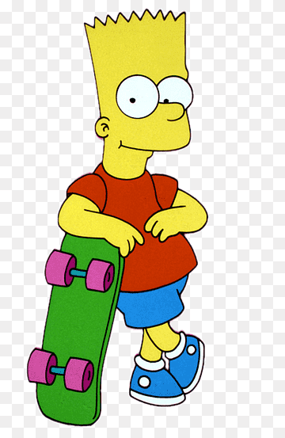
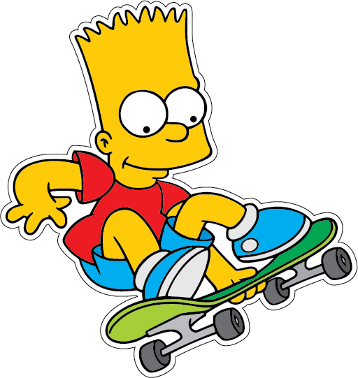
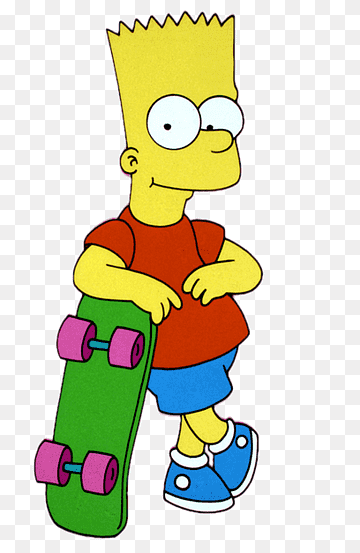
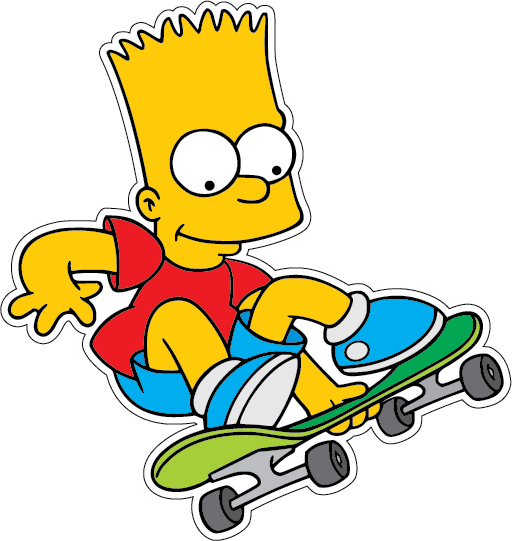

Герой мультипликационного сериала «Симпсоны». Наряду с Гомером, один из наиболее известных персонажей шоу. В списке пятидесяти лучших мультипликационных героев в истории по версии журнала TV Guide занимает 11-ю строчку совместно со своей сестрой Лизой.
 



Мэтт Грейнинг придумал этому персонажу имя, взяв анаграмму слова «brat» (с англ. - «невоспитанный ребёнок»). Так как остальные члены семьи названы в честь близких Грейнинга, бытует мнение, что прообразом Барта послужил он сам. Сам мультипликатор этого не признал: он говорил, что многое в характере Барта позаимствовано у его старшего брата Марка, а черты его самого представлены только частично. Также Грейнинг заявил, что его очень вдохновила премьера телесериала «Деннис-мучитель», главный герой которого очень разочаровал Мэтта. Тогда он решил создать героя, который был бы настоящим хулиганом.